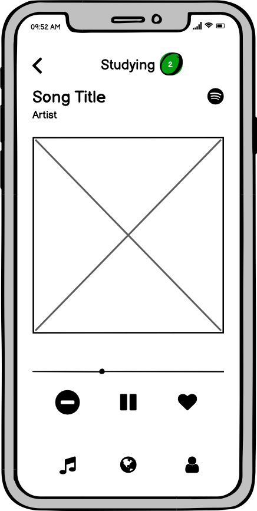
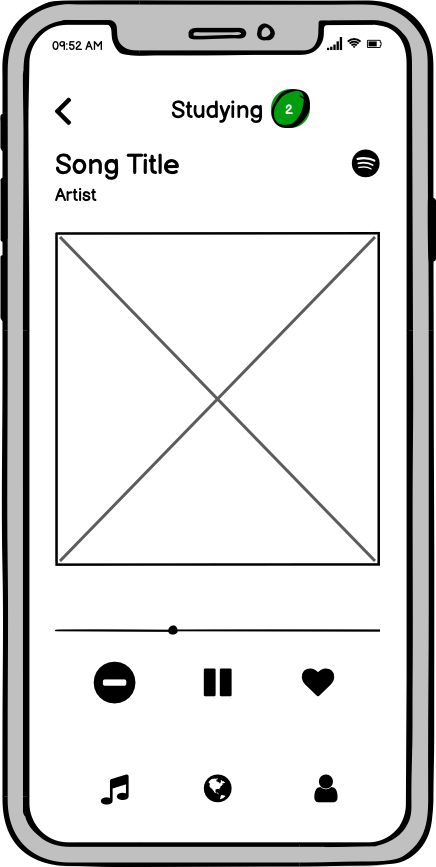

For our Iterative Design project, we choose Discz from Y combinator. The core conecpt behind Discz is that it is a Spotify-integrated music discovery platform built to help you find your next favorite artists and songs. It's main functionality is the ability to build playlists at the swipe of a finger and find new music via custom recommendations catered to your taste! You can swipe through song snippets to find music you love and add it to your spotify playlists.


 
